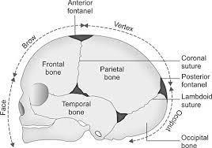
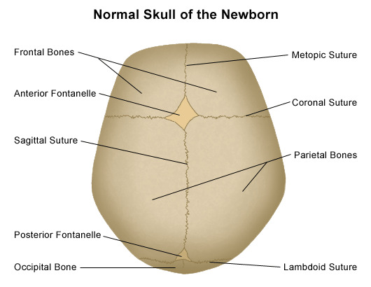

The three parts of the fetal skull (Base, Face, Vault), the bones of the vault and the sutures that join them, the vertex and brow landmarks, the anterior and posterior fontanelles and their clinical importance, and the longitudinal and transverse diameters of the fetal skull relevant to engagement and delivery.
3 parts of the skull (Base · Face · Vault)5 vault sutures (frontal · sagittal · lambdoid · coronal · temporal)6 fontanelles (2 obstetrically important)6 longitudinal diameters4 transverse diameters2 source diagrams · 0 external visuals
1 · Intended Learning Outcomes (ILOs)
At the end of this chapter the student should be able to:
To understand the components of fetal skull
To be able to differentiate between anterior and posterior fontanelle.
To be able to describe various diameters of fetal skull
2 · The fetal skull — three parts separated by sutures and fontanelles
The fetal skull consists of 3 parts separated by sutures and fontanelles:
1. Base
From the chin to the foramen magnum.
2. Face
From the chin to the root of the nose and the suborbital margin.
3. Vault
Consists of three regions (see §3) and is compressible during labour, allowing the fetal head to mould through the birth canal.
Clinical pearl: The base of the skull is a rigid, non-compressible ring (because the bones are fused at the base), while the vault is compressible — this is what allows the fetal head to undergo moulding as it passes through the pelvis.
📝 Question 1 of 5
Which part of the fetal skull is compressible during labour, allowing moulding?
The vault is compressible during labour — its five flat bones are joined by fibrous sutures that allow sliding. The base is rigid and non-compressible because bones are fused.
📝 Question 2 of 5
The base of the fetal skull extends from:
The base extends from the chin to the foramen magnum and is a rigid, non-compressible ring.
📝 Question 3 of 5
In obstetric practice, this knowledge helps:
Comprehensive knowledge enables prevention, early diagnosis, and optimal management.
📝 Question 4 of 5
The clinical significance of this section is:
Understanding these concepts directly informs clinical management.
📝 Question 5 of 5
Which of the following is a key concept?
Understanding key concepts is fundamental to clinical management.
3 · Bones of the vault and the sutures between them
The vault is built from five flat bones joined by fibrous sutures that allow the bones to slide over each other during labour (moulding):
Source Image

Source: Provided Material (Chapter 21 — Fetal Skull)
Figure 1 — Lateral (side) view of the fetal skull, identifying the bones (frontal, parietal, temporal, occipital), the coronal and lambdoid sutures, the anterior and posterior fontanelles, the vertex, and the inion. Orientation arrow points to the face.
Composition of the vault — 5 bones joined by 5 named sutures
Bones (how many)
Separating suture
2 frontal bones
separated by the frontal suture
2 parietal bones
separated by the sagittal suture
Occipital bone
separated from the parietal bones by the lambdoid suture
Frontal ↔ parietal bones
joined by the coronal suture
2 parietal ↔ temporal bone on each side
joined by the temporal suture
Note: The exact phrasing of the source is preserved: the lambdoid suture separates the occipital bone from the parietal bones; the coronal suture separates the frontal from the parietal bones; each parietal bone is separated from the temporal bone on each side by the temporal suture.
📝 Question 1 of 5
How many bones form the vault of the fetal skull?
The vault is built from 5 flat bones: 2 frontal bones, 2 parietal bones, and 1 occipital bone.
📝 Question 2 of 5
Which suture separates the two frontal bones?
The frontal suture separates the two frontal bones. The sagittal suture separates the two parietal bones.
📝 Question 3 of 5
The lambdoid suture separates:
The lambdoid suture separates the occipital bone from the parietal bones.
📝 Question 4 of 5
Which of the following is a key concept?
Understanding key concepts is fundamental to clinical management.
📝 Question 5 of 5
In obstetric practice, this knowledge helps:
Comprehensive knowledge enables prevention, early diagnosis, and optimal management.
4 · The vertex and the brow
The vertex
The vertex is the area of the vault bounded:
Anteriorly — by the anterior fontanelle and the coronal suture.
Posteriorly — by the posterior fontanelle and lambdoid suture.
Laterally — by 2 lines passing by the parietal eminencies.
The brow
The brow is the area from the nose and supra-orbital ridges to the anterior fontanelle and coronal suture.
Why these landmarks matter: The vertex is the presenting area in a well-flexed vertex (occipito-anterior) delivery — the smallest possible plane. The brow is the presenting area in brow presentation — a malpresentation (see §8 — Mento-vertical diameter 13.5 cm).
📝 Question 1 of 5
The vertex of the fetal skull is bounded anteriorly by:
The vertex is bounded anteriorly by the anterior fontanelle and coronal suture, posteriorly by the posterior fontanelle and lambdoid suture, and laterally by lines through the parietal eminences.
📝 Question 2 of 5
The brow presentation has which engagement diameter?
In brow presentation, the presenting diameter is the mento-vertical (13.5 cm), which exceeds the largest pelvic inlet diameter, so the head cannot enter the pelvis.
📝 Question 3 of 5
In obstetric practice, this knowledge helps:
Comprehensive knowledge enables prevention, early diagnosis, and optimal management.
📝 Question 4 of 5
The clinical significance of this section is:
Understanding these concepts directly informs clinical management.
📝 Question 5 of 5
Which of the following is a key concept?
Understanding key concepts is fundamental to clinical management.
5 · The fontanelles — 6 areas, 2 clinically important
Fontanelles are 6 areas that lie at the meeting of the sutures.
Of the 6 fontanelles:
4 fontanelles — no obstetric importance
Lie at the anterior and posterior end of the temporal sutures on each side. Useful anatomically but not palpable from below during labour.
2 fontanelles — obstetrically important
The anterior and posterior fontanelles are important to diagnose on vaginal examination.
The anterior and posterior fontanelles are used to diagnose:
The vertex presentation — the anterior and posterior fontanelles are both palpable in vertex presentation.
The position of the occiput — the diamond anterior fontanelle can be distinguished from the triangular posterior fontanelle on palpation.
The degree of flexion of the head — the relative position of the two fontanelles tells the examiner how flexed the head is.
📝 Question 1 of 5
How many fontanelles are there in the fetal skull, and how many are obstetrically important?
There are 6 fontanelles in the fetal skull. Only 2 are obstetrically important: the anterior and posterior fontanelles. The other 4 lie at the ends of the temporal sutures.
📝 Question 2 of 5
The anterior and posterior fontanelles help diagnose all EXCEPT:
The fontanelles help diagnose vertex presentation, the position of the occiput (by distinguishing diamond vs triangular shape), and the degree of flexion. They do not determine fetal sex.
📝 Question 3 of 5
When assessing this aspect, the most important factor is:
Assessment requires integration of clinical, laboratory, and imaging findings.
📝 Question 4 of 5
The clinical significance of this section is:
Understanding these concepts directly informs clinical management.
📝 Question 5 of 5
Which of the following is a key concept?
Understanding key concepts is fundamental to clinical management.
6 · Anterior vs posterior fontanelle — comparison
Source Image

Source: Provided Material (Chapter 21 — Fetal Skull)
Figure 2 — "Normal Skull of the Newborn" — superior (top-down) view. The anterior fontanelle is the large lozenge/diamond-shaped membranous area at the junction of the metopic, coronal, and sagittal sutures. The posterior fontanelle is the smaller triangular area at the junction of the sagittal and lambdoid sutures.
Feature
Anterior Fontanelle (Bregma)
Posterior Fontanelle (Lambda)
Shape
Large, and lozenge shaped.
Small and triangular.
Floor
Its floor is membranous.
Its floor is bony.
Bones surrounding it
Surrounded by 4 bones. (2 frontal and 2 parietal).
Surrounded by 3 bones. (2 parietal and occipital).
Closure
The floor is completely ossified 1.5 years after birth.
The floor is completely ossified at full term.
Behaviour during moulding
The surrounding bones are not overlapping during moulding.
The surrounding bones are overlapping during moulding.
The anterior fontanelle (bregma) is surrounded by how many bones?
The anterior fontanelle is surrounded by 4 bones: 2 frontal and 2 parietal. It is large, lozenge-shaped, and closes about 1.5 years after birth.
📝 Question 2 of 5
Which fontanelle has a bony floor at term?
The posterior fontanelle has a bony floor and its surrounding bones overlap during moulding. The anterior fontanelle has a membranous floor.
📝 Question 3 of 5
The posterior fontanelle closes:
The posterior fontanelle closes (is completely ossified) at full term. Memory aid: Posterior = Pre-birth/at term.
📝 Question 4 of 5
The clinical significance of this section is:
Understanding these concepts directly informs clinical management.
📝 Question 5 of 5
In obstetric practice, this knowledge helps:
Comprehensive knowledge enables prevention, early diagnosis, and optimal management.
7 · Diameters of the fetal skull — overview
The diameters of the fetal skull are divided into two groups:
A · Longitudinal diameters (6)
Run from the chin / occiput down the long axis of the skull — determine whether the head can engage and through which presentation.
B · Transverse diameters (4)
Run side-to-side across the skull — relevant to asynclitism and the lateral fit of the head in the pelvis.
Each group is described in detail in §8 and §9.
📝 Question 1 of 5
In obstetric practice, this knowledge helps:
Comprehensive knowledge enables prevention, early diagnosis, and optimal management.
📝 Question 2 of 5
The clinical significance of this section is:
Understanding these concepts directly informs clinical management.
📝 Question 3 of 5
Which of the following is a key concept?
Understanding key concepts is fundamental to clinical management.
📝 Question 4 of 5
When assessing this aspect, the most important factor is:
Assessment requires integration of clinical, laboratory, and imaging findings.
📝 Question 5 of 5
Which of the following is a key concept?
Understanding key concepts is fundamental to clinical management.
8 · Longitudinal diameters (6)
Suboccipito-bregmatic = 9.5 cm
From below the occipital protuberance to the center of the anterior fontanelle (bregma).
It is the engagement diameter in occipito-anterior with complete flexion.
Suboccipito-frontal = 10 cm
From below the occipital protuberance to the anterior end of the bregma.
It is the engagement diameter in occipito anterior with incomplete flexion.
It is the diameter that distends the vulva in occipito anterior if the head is allowed to extend after crowning.
Occipito-frontal = 11.5 cm
From the occipital protuberance to the root of the nose.
It is the engagement diameter in occipito-posterior position.
It is the diameter that distends the vulva in face to pubis delivery.
It is the diameter that distends the vulva if the head extends before crowing in occipito anterior.
Submento-bregmatic = 9.5 cm
From the junction of the chin and neck to the center of the bregma.
It is the engagement diameter in face presentation when the head is completely extended.
Submento-vertical = 11.5 cm
From the junction of the chin and neck to the vertical point — which is a point on the sagittal suture midway between anterior and posterior fontanelles.
It is the engagement diameter in the incompletely extended face.
It is the diameter that distends the vulva during face delivery.
Mento-vertical = 13.5 cm
From the tip of the chin to the vertical point.
It is the engagement diameter in brow presentation. As it is longer than the largest diameter of the pelvic brim, the head cannot enter the pelvis.
Why the mento-vertical (13.5 cm) is the "danger" diameter: Because it exceeds the largest pelvic inlet diameter (anatomical transverse = 13 cm, true conjugate = 11 cm), brow presentation is not engaged in the pelvis — the fetal head cannot pass through the brim. The obstetrician must wait for spontaneous flexion to vertex, or extension to face, or perform caesarean section.
Quick reference — longitudinal diameters
Diameter
Length
Engagement / clinical role
Suboccipito-bregmatic
9.5 cm
Engagement in OA with complete flexion.
Suboccipito-frontal
10 cm
Engagement in OA with incomplete flexion; distends vulva if head extends after crowning.
Occipito-frontal
11.5 cm
Engagement in OP position; distends vulva in face-to-pubis delivery & if head extends before crowning in OA.
Submento-bregmatic
9.5 cm
Engagement in face presentation, head completely extended.
Submento-vertical
11.5 cm
Engagement in incompletely extended face; distends vulva during face delivery.
Mento-vertical
13.5 cm
Engagement in brow presentation — head cannot enter the pelvis.
📝 Question 1 of 5
Which diameter is the engagement diameter in occipito-anterior position with complete flexion?
The suboccipito-bregmatic diameter (9.5 cm) is the engagement diameter in occipito-anterior position with complete flexion — it is the smallest diameter presenting.
📝 Question 2 of 5
The occipito-frontal diameter (11.5 cm) is the engagement diameter in:
The occipito-frontal diameter (11.5 cm) is the engagement diameter in occipito-posterior position and also distends the vulva in face-to-pubis delivery.
📝 Question 3 of 5
Why is brow presentation dangerous?
The mento-vertical diameter (13.5 cm) is longer than the largest pelvic inlet diameter (anatomical transverse = 13 cm), so the head cannot enter the pelvis in brow presentation.
📝 Question 4 of 5
Which of the following is a key concept?
Understanding key concepts is fundamental to clinical management.
📝 Question 5 of 5
In obstetric practice, this knowledge helps:
Comprehensive knowledge enables prevention, early diagnosis, and optimal management.
9 · Transverse diameters (4)
Biparietal = 9.5 cm
Between the 2 parietal eminencies.
The most important transverse diameter — the value used in ultrasound to estimate fetal head size and confirm engagement.
Subparietal supraparietal = 9 cm
From below one parietal eminence to above the opposite eminence.
It is the engagement diameter in case of asynclitism.
Bitemporal = 8 cm
Between the anterior ends of the temporal sutures.
Bimastoid = 7.5 cm
Between the tips of the 2 mastoid processes.
Quick reference — transverse diameters
Diameter
Length
Landmarks / clinical role
Biparietal
9.5 cm
Between the 2 parietal eminencies. The standard sonographic head measurement.
Subparietal supraparietal
9 cm
Below one parietal eminence to above the opposite eminence. Engagement diameter in asynclitism.
Bitemporal
8 cm
Between the anterior ends of the temporal sutures.
Bimastoid
7.5 cm
Between the tips of the 2 mastoid processes.
Note: The values 9.5 / 9 / 8 / 7.5 cm come directly from the source material and are preserved verbatim.
📝 Question 1 of 5
Which is the most important transverse diameter of the fetal skull?
The biparietal diameter (9.5 cm) is the most important transverse diameter — it is the standard sonographic measurement for estimating fetal head size and confirming engagement.
📝 Question 2 of 5
The subparietal supraparietal diameter (9 cm) is the engagement diameter in:
The subparietal supraparietal diameter is the engagement diameter in asynclitism, where the head is tilted laterally in the pelvis.
📝 Question 3 of 5
Which of the following is a key concept?
Understanding key concepts is fundamental to clinical management.
📝 Question 4 of 5
In obstetric practice, this knowledge helps:
Comprehensive knowledge enables prevention, early diagnosis, and optimal management.
📝 Question 5 of 5
When assessing this aspect, the most important factor is:
Assessment requires integration of clinical, laboratory, and imaging findings.
Student activity · Assessment · References
10 · Student activity · Assessment · References
Student activity (skill lab)
Each student is requested to go to skill lab to check and evaluate by himself (herself) the various components and diameters of fetal skull.
All 2 images in this chapter are source visuals extracted from the provided Book Obstetrics 2025-2026 PDF, Chapter 21 — Fetal Skull. They are reused here for educational purposes from the provided material.
Image attribution:
Figure 1 (img-000): Lateral view of the fetal skull — bones, sutures, fontanelles, vertex, inion — provided material.
Figure 2 (img-001): Superior view of the "Normal Skull of the Newborn" — provided material.
No external images were used in this chapter. All visuals are sourced from the provided Book Obstetrics 2025-2026 PDF.